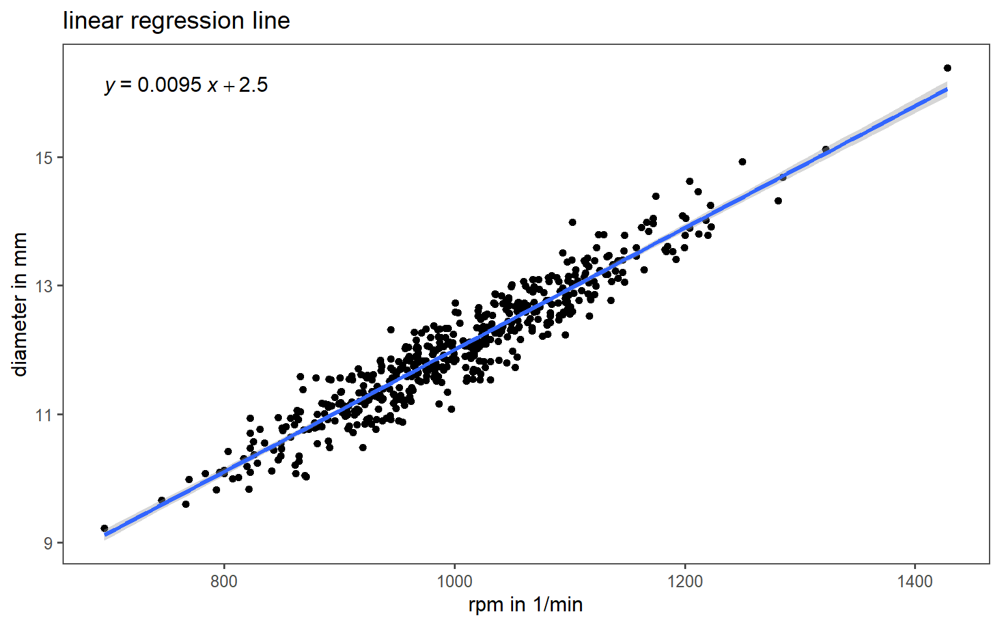
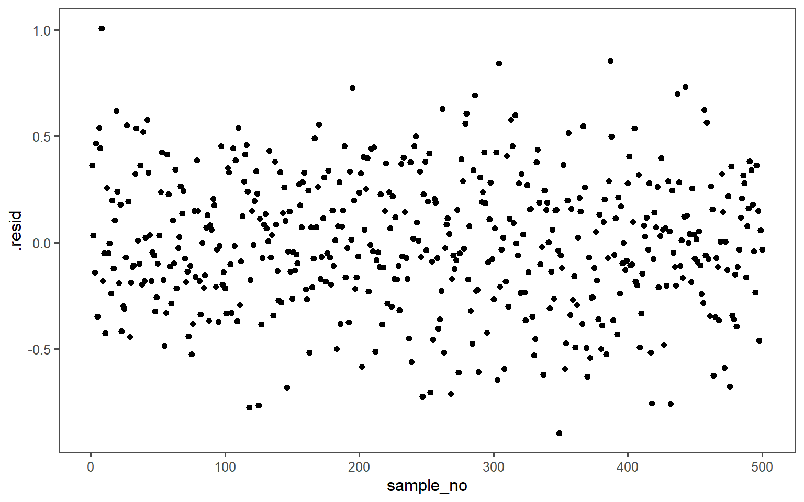
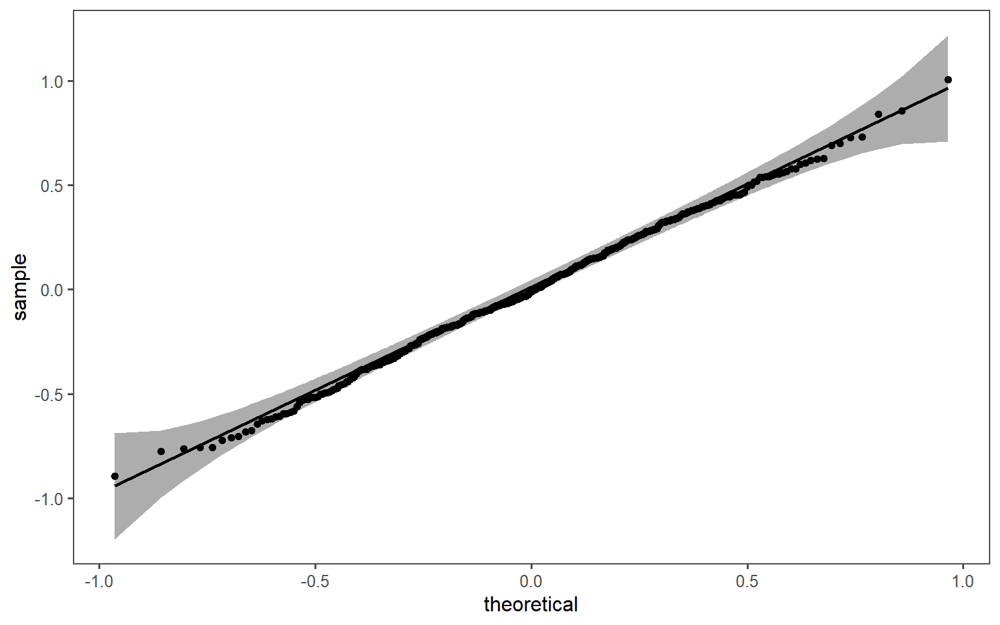
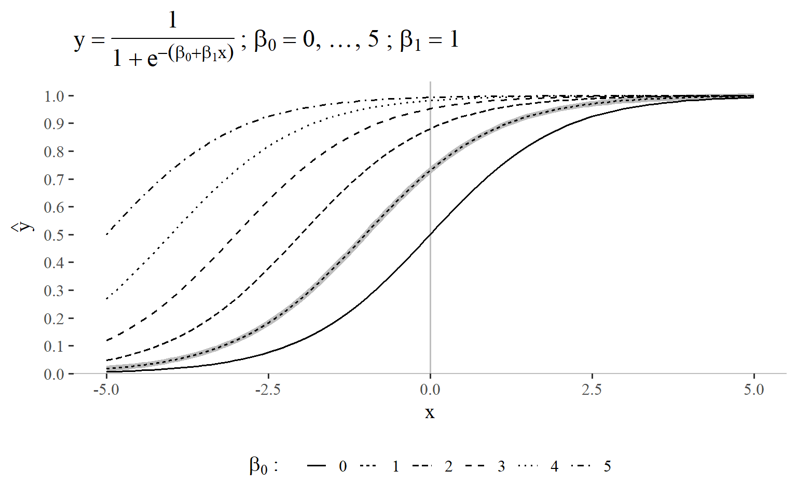
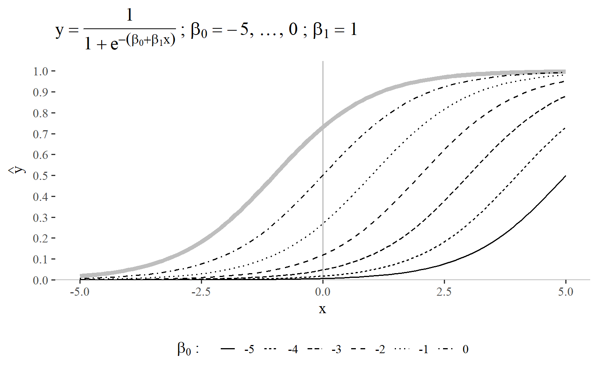
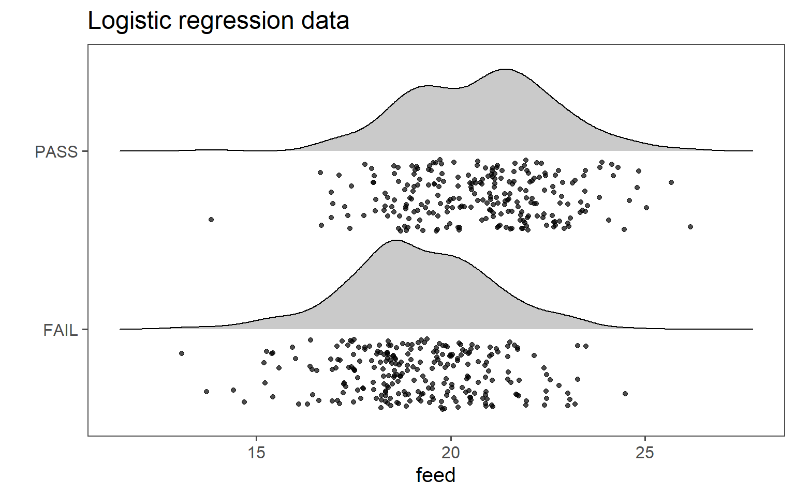
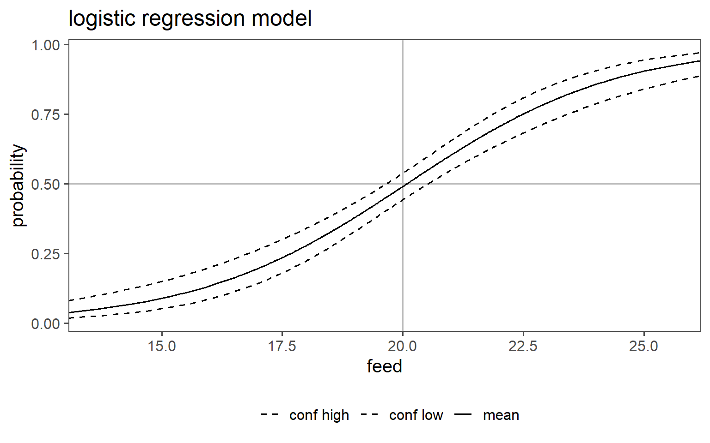
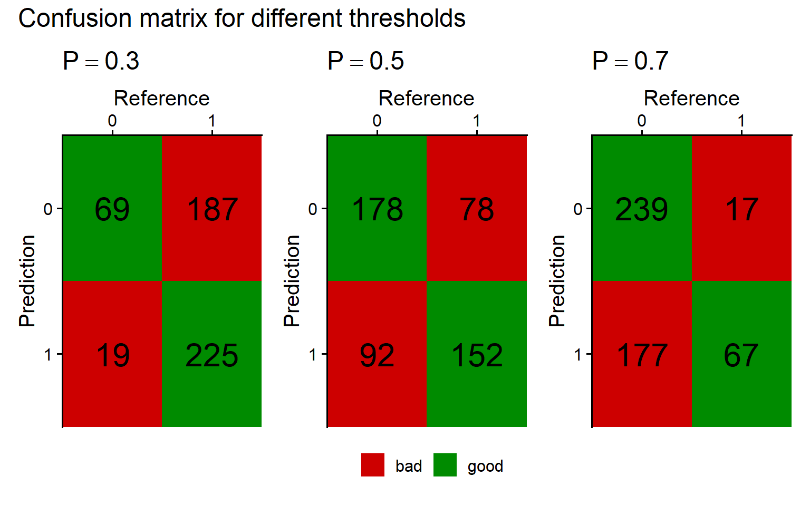

5 Regression Analysis
Regression analysis is a statistical method used to examine the relationship between one dependent variable and one or more independent variables. It aims to understand how the dependent variable changes when one or more independent variables change.
The core idea is to create a mathematical model that represents this relationship. The model is typically in the form of an equation that predicts the value of the dependent variable based on the values of the independent variables.
There are different types of regression analysis, such as linear regression (when the relationship between variables is linear) and nonlinear regression (when the relationship is not linear). The process involves finding the best-fitting line or curve that minimizes the differences between the predicted values from the model and the actual observed values.
5.1 Linear Regression
\[\begin{align} y = \beta_0 + \beta_1 \cdot X \label{linreg} \end{align}\]
The basic idea behind linear regression is, to find the line of the form \(Y = \beta_0 + \beta_1 \cdot X\) that best fits the datapoints. In order to determine the best fit, a criterion to optimize for is needed. This is where residuals come into play.
5.1.1 Residuals

The computation of the residuals is based on \(\eqref{rss}\) to the residual sum of squares.
\[\begin{align} RSS = \frac{1}{n} \sum_{i=1}^{n} (y_i - (\beta_1 x_i+\beta_0))^2 \label{rss} \end{align}\]
5.1.2 Gradient Descent (Ruder 2016)

In linear regression, gradient descent is an iterative optimization process used to minimize the difference between predicted and actual values. It starts with initial coefficients and calculates the gradient of the cost function, representing the error. The coefficients are then updated in the opposite direction of the gradient, with the magnitude of the update controlled by a learning rate. This process is repeated until convergence, gradually refining the coefficients to improve the accuracy of the linear regression model.
5.1.3 Model Evaluation and Interpretation

The coefficient of determination (\(r^2\)), is a statistical measure that assesses the proportion of the variance in the dependent variable that is explained by the independent variable(s) in a regression model. It ranges from \(0\) to \(1\), where \(0\) indicates that the model does not explain any variability, and \(1\) indicates that the model explains all the variability. In other words, \(r^2\) provides insight into the goodness of fit of a regression model, indicating how well the model’s predictions match the observed data.
\[\begin{align} r^2 = 1- \frac{RSS}{SSE} \label{r2} \end{align}\]
The adjusted coefficient of determination, is a modification of the regular \(r^2\) in regression analysis. While \(r^2\) assesses the proportion of variance explained by the independent variables, the \(r^2_{adjusted}\) takes into account the number of predictors (\(k\)) in the model, addressing potential issues with overfitting according to \(\eqref{r2adj}\).
The \(r^2_{adjusted}\) incorporates a penalty for adding unnecessary predictors that do not significantly contribute to explaining the variance in the dependent variable. This adjustment helps prevent an inflated \(r^2\) when including more predictors, even if they don’t improve the model significantly.
\[\begin{align} r^2_{adjusted} = 1 - (1-r^2)\frac{n-1}{n-k-1} \label{r2adj} \end{align}\]
Call:
lm(formula = diameter ~ rpm, data = drive_shaft_rpm_dia)
Residuals:
Min 1Q Median 3Q Max
-0.89501 -0.19690 -0.01096 0.21917 1.00742
Coefficients:
Estimate Std. Error t value Pr(>|t|)
(Intercept) 2.5000000 0.1406190 17.78 <2e-16 ***
rpm 0.0095000 0.0001399 67.89 <2e-16 ***
---
Signif. codes: 0 '***' 0.001 '**' 0.01 '*' 0.05 '.' 0.1 ' ' 1
Residual standard error: 0.3126 on 498 degrees of freedom
Multiple R-squared: 0.9025, Adjusted R-squared: 0.9023
F-statistic: 4610 on 1 and 498 DF, p-value: < 2.2e-16In linear regression modeling, the absence of a visible pattern in the residuals is desirable because it indicates that the model adequately captures the underlying relationship between the independent and dependent variables. Residuals are the differences between the observed and predicted values, and their randomness or lack of discernible pattern suggests that the model is effectively explaining the variance in the data. A visible pattern in residuals could indicate that the model fails to account for certain patterns or trends, suggesting potential shortcomings or misspecifications in the regression model. Detecting and addressing such patterns in residuals is crucial for ensuring the validity and reliability of the linear regression analysis.


In linear regression, the assumption of normally distributed residuals is essential for accurate statistical inference, parameter estimation using ordinary least squares, and constructing reliable confidence intervals. Normal residuals indicate that the model appropriately captures data variability and helps identify issues like heteroscedasticity. While departures from normality may not always invalidate results, adherence to this assumption enhances the model’s robustness and reliability. If consistently violated, alternative modeling approaches or transformations may be considered.
5.1.4 Hypostesis testing in linear regression
Null Hypothesis (H0): \(\beta_1 = 0\)
Alternative Hypothesis (Ha): \(\beta_1 \neq 0\)
| term | estimate | std.error | statistic | p.value |
|---|---|---|---|---|
| (Intercept) | 2.500 | 0.141 | 17.779 | 0.000 |
| rpm | 0.010 | 0.000 | 67.895 | 0.000 |
In linear regression, t testing of coefficients assesses whether individual regression coefficients significantly differ from zero, providing insights into the significance of each predictor’s contribution to the model.
| r.squared | adj.r.squared | statistic | p.value | df | df.residual | nobs |
|---|---|---|---|---|---|---|
| 0.902 | 0.902 | 4,609.692 | 0.000 | 1.000 | 498.000 | 500.000 |
In linear regression, the F-test assesses the overall significance of the regression model by comparing the fit of the model with predictors to a model without predictors, helping determine if the regression equation explains a significant proportion of the variance in the dependent variable.
5.2 Multiple linear regression
Characteristic |
Overall |
A |
B |
C |
p-value |
|---|---|---|---|---|---|
| rpm | 999 (932, 1,068) | 993 (923, 1,061) | 995 (927, 1,074) | 1,012 (946, 1,068) | |
| diameter | 11.95 (11.30, 12.66) | 11.90 (11.24, 12.51) | 11.98 (11.30, 12.67) | 12.01 (11.41, 12.77) | |
| feed | 40.01 (39.34, 40.67) | 39.98 (39.34, 40.63) | 39.91 (39.34, 40.65) | 40.05 (39.37, 40.78) | |
| 1
Median (Q1, Q3) |
|||||
A short exploratory data analysis of the data for the multiple linear regression is given in Table 5.3.
Figure 5.8 shows the graphical test for normal distribution for the multiple linear regression.

In Figure 5.9 the distribution of the input data is shown in a histogram.
\[\begin{align} Y \sim rpm + feed+ site \label{mlmmodel} \end{align}\]
Characteristic |
Beta |
95% CI 1 |
p-value |
|---|---|---|---|
| rpm | 0.00 | 0.00, 0.01 | <0.001 |
| feed | 0.44 | 0.29, 0.58 | <0.001 |
| site | |||
| A | 0.00 | — | |
| B | 0.09 | -0.02, 0.20 | 0.11 |
| C | 0.08 | -0.03, 0.20 | 0.15 |
| 1
CI = Confidence Interval |
|||
\(\eqref{mlmmodel}\) shows the general model for the multiple linear regression model. In this example, also the production site (site A, site B and site C) is included to test, if different production sites lead to differently produced drive shafts. The results of the multiple regression are shown in Table 5.4. Whilst the continuous variables appear to be significant (\(p<\alpha = 0.05\)), the production site does not play a significant rolefor the drive shaft diameter.

In Figure 5.10 the model is shown to ease the interpretation. With increasing rpm or feed also the drive shaft diameter increases.

In Figure 5.12 the normal distribution of the residuals is confirmed, the model appears to be valid.
5.3 Logistic Regression

Logistic regression is a statistical method designed for binary classification problems (Figure 5.13). It models the probability that an observation belongs to a particular class using the sigmoid (logistic) function \(\eqref{sigmoid}\). The key steps include:
- Probability Modeling:
- Model predicts the probability of an instance belonging to a specific class.
- Linear Combination:
- Combines linearly weighted input features, representing the log-odds of the positive class.
- Sigmoid Function:
- Transforms the linear combination to ensure output is between 0 and 1.
- Decision Boundary:
- Threshold probability (usually \(0.5\)) determines class assignment.
- Maximum Likelihood Estimation:
- Parameters are estimated using maximum likelihood to maximize the likelihood of observed outcomes.
- Odds Ratio:
- Quantifies the impact of each predictor on the odds of the positive class.
Logistic regression is widely used for binary classification tasks in different domains, providing an interpretable way to model the relationship between predictors and a binary outcome.
\[\begin{align} p = \frac{1}{1+e^{-(\beta_0 + \beta_1x)}} \label{sigmoid} \end{align}\]
The ordinary linear regression equation is shown in \(\eqref{linreg}\).
If for \(y\) the probabilities \(P\) are used they may be \(>1\) or \(<0\) which is not possible for \(P\).
To overcome this issue, the odds of \(P = \frac{P}{1-P}\) are taken.
\[\begin{align} \frac{P}{1-P} &= \beta_0 + \beta_1x \label{logreg01} \\ \frac{P}{1-P} &\in {0 \ldots + \infty} \nonumber \end{align}\]
Restricted variables are not easy to model why \(\eqref{logreg01}\) is expanded to \(\eqref{logreg02}\).
\[\begin{align} \log\left( \frac{P}{1-P}\right) &= \beta_0 + \beta_1x \label{logreg02} \end{align}\]
Which then in turn gives \(\eqref{sigmoid}\).
5.3.1 \(\beta_0 = 1\) and \(\beta_1 = 1\)
In order to better understand the influencing factors a small parametric study on \(\beta_0\) and \(\beta_1\) is given. Figure 5.14 the sigmoid function \(p = \frac{1}{1+e^{-(\beta_0 + \beta_1x)}}\) with \(\beta_0=1\) and \(\beta_1 = 1\) is shown as a reference. Please note that the linear regression (\(\beta_0 + \beta_1x\)) expands the usual sigmoid function which is given by
\[f(x) = \frac{1}{1+e^{-x}}\]
to model it in the intercept and gradient kind of logic.
5.3.2 \(\beta_0 = 1\) and \(\beta_1 = 0 \ldots 5\)

In the first case of the parametric study the gradient parameter is studied by varying it between \(0\ldots5\) with \(step_{size}=1\). From Figure 5.15 it can be seen, that the linear regression gradient parameters varies the characteristic S-like shape of the sigmoid function. The higher \(\beta_1\) is, the more pronounced the S-shape becomes. The reference shape for \(\beta_0 = 1\) and \(\beta_1 = 1\) is shown in light gray in the figure. An interesting effect is visible for a gradient of \(\beta_1 = 0\): The function becomes a constant which only depends on the intercept (in this case \(\beta_0=1\)).
5.3.3 \(\beta_0 = 1\) and \(\beta_1 = -5 \ldots 0\)
When the parameter study is expanded to negative values of \(\beta_1\) (\(\beta_1 = -5 \ldots 0\)) the curve is mirrored and reverses its direction (see Figure 5.16), which is also highlighted by the reference shape for \(\beta_0 = 1\) and \(\beta_1 = 1\) in light gray. The general interpretation for the influence of this parameter is reversed by stays the same: the larger the deviation from \(0\) is for \(\beta_1\), the more pronounced the S-like shape becomes.
5.3.4 \(\beta_0 = 0\ldots 5\) and \(\beta_1 = 1\)

The second step is to vary the intercept (\(\beta_1\)) of the linear regression function that is “hidden” within the sigmoid function. The reference function for \(\beta_0 = 1\) and \(\beta_1 = 1\) is again shown in light gray in the background in Figure 5.17. It can clearly be seen, that the intercept in a sigmoid-function setting can be used as a kind of offset. Whilst the curve is exactly \(0.5\) at \(\beta_0 = 0\), this intersection can be adapted by modeling the intercept. For \(\beta_0 > 0\) the intersection point becomes \(>0.5\).
5.3.5 \(\beta_0 = -5 \ldots 0\) and \(\beta_1 = 1\)

The reference function for \(\beta_0 = 1\) and \(\beta_1 = 1\) is again shown in light gray in the background in Figure 5.18. For an intercept \(<0\) the intersection point with the xaxis then offsets the curve in the other direction compared with Figure 5.17. For \(\beta_0 < 0\) the intersection point becomes \(<0.5\). In both cases the S-shape like characteristic of the sigmoid function is retained.
5.3.6 Maximum Likelihood Estimation (MLE)
Maximum Likelihood Estimation (MLE) is a statistical method used for estimating the parameters of a model (Starmer 2022). In this approach, the parameter values are chosen to maximize the likelihood function, which represents the probability of observing the given data under the assumed statistical model. The idea is to find the parameter values that make the observed data most probable.
In contrast to the cost function for linear regression \(\eqref{mse}\), \(\hat{y_i}\) in logistic regression is a non-linear function \(\eqref{yhatlog}\).
\[\begin{align} \hat{y} = \frac{1}{1+e^{-z}} \label{yhatlog} \end{align}\]
Which is why the Maximum Likelihood Estimator is used.
Using the MLE basically means, to try different models (with different model parameters) that maximize the likelihood of the parameters being true. Because it is easier to look for minima (gradient descent), a loss function is formulated that can be used as a loss function.

\[\begin{align} -\log L(\theta) = -\sum_{i=1}^{n} y \log(\sigma(\theta^Tx^i)) + (1-y)\log(1-\sigma(\theta^Tx^i)) \label{logresloss} \end{align}\]
5.3.7 Modeling Production Data

In Figure 5.20 the data for the production data. The drive shafts have been rated between PASSand FAIL and the lathing machine feed has been recorded. The question is now, at which feed the drive shafts start to FAIL.
Characteristic |
N = 500 1 |
|---|---|
| feed | 19.89 (18.55, 21.40) |
| pass_1_fail_0 | |
| 0 | 256 (51%) |
| 1 | 244 (49%) |
| 1
Median (Q1, Q3); n (%) |
|
Table 5.5 shows an overview of the logistic regression data. PASS and FAIL are fairly similar distributed.
Characteristic |
log(OR) 1 |
95% CI 1 |
p-value |
|---|---|---|---|
| feed | 0.46 | 0.35, 0.57 | <0.001 |
| 1
OR = Odds Ratio, CI = Confidence Interval |
|||
The model coefficients are shown in Table 5.6. Translated in equation \(\eqref{logregor}\) and \(\eqref{logrege}\) we can see, what has been computed.
\[\begin{align} \log(\frac{P}{1-P}) &= -9.17 + 0.46x \label{logregor} \\ \frac{P}{1-P} &= e^{-9.17 + 0.46x} \label{logrege} \end{align}\]
Therefore the models explains what the odds \(\frac{P}{1-P}\) are for a drive shaft to be FAIL or PASS for a given feed.

Figure 5.21 shows the probability for a drive shaft PASS or FAIL for a given feed as well as the confidence interval of the odds ratio for any given feed. For example the probability for PASS at a feed of 20 is \(49 \%\) with a confidence interval of \(44\%\) to \(54\%\).
5.3.7.0.1 residuals
5.3.7.1 Mc Fadden \(R^2\)
McFadden’s \(R^2\) is a measure used to evaluate the goodness of fit for logistic regression models and is calculated using \(\eqref{mcfadden}\).
\[\begin{align} R^2 = 1- \frac{\log(L_{model})}{\log(L_{null})} \label{mcfadden} = 0.1198876 \end{align}\]
It compares the model to the null-model. It is much smaller then the coefficient of determination with values ranging between \(0.2 \ldots 0.4\) already indicating a good model fit in practice.
5.3.7.2 Confusion Matrix

A confusion matrix is a table used to evaluate the performance of a classification algorithm. It provides a detailed breakdown of the actual versus predicted classifications, enabling the calculation of various performance metrics. The matrix is particularly useful for binary and multiclass classification problems.
On the x-axis usually the ground truth is depicted whereas on the y-axis the predictions of the algorithm are shown. From this several performance metrics can be calculated.
- True Positive (TP): The number of positive instances correctly classified as positive.
- False Positive (FP): The number of negative instances incorrectly classified as positive (also known as Type I error).
- True Negative (TN): The number of negative instances correctly classified as negative.
- False Negative (FN): The number of positive instances incorrectly classified as negative (also known as Type II error).
5.3.7.2.1 Accuracy
\[\frac{TP + TN}{TP+FP+TN+FN}\]
- Definition
-
The ratio of correctly predicted instances (both true positives and true negatives) to the total instances.
- Interpretation
-
Accuracy measures the overall correctness of the model. It indicates the proportion of total predictions that were correct. While accuracy is useful, it can be misleading in cases of imbalanced datasets where one class is more frequent than the other.
5.3.7.2.2 Precision
\[\frac{TP}{TP+FP}\]
- Definition
-
The ratio of true positive instances to the total instances predicted as positive.
- Interpretation
-
Precision, also known as positive predictive value, measures the accuracy of positive predictions. It is the proportion of correctly identified positive instances out of all instances predicted as positive. High precision indicates a low false positive rate.
5.3.7.2.3 Recall
\[\frac{TP}{TP+FN}\]
- Definition
- The ratio of true positive instances to the total actual positive instances.
- Interpretation
-
Recall measures the model’s ability to correctly identify all positive instances. It is the proportion of correctly identified positive instances out of all actual positive instances. High recall indicates a low false negative rate.
5.3.7.2.4 Specificity
\[\frac{TN}{TN+FP}\]
- Definition
-
The ratio of true negative instances to the total actual negative instances.
- Interpretation
-
Specificity measures the model’s ability to correctly identify negative instances. It is the proportion of correctly identified negative instances out of all actual negative instances. High specificity indicates a low false positive rate.
5.3.7.2.5 F1 Score
\[2\times\frac{Precision\times Recall}{Precision + Recall}\]
- Definition
-
The harmonic mean of precision and recall.
- Interpretation
-
The F1 Score combines precision and recall into a single metric. It provides a balance between the two, particularly useful when you need to take both false positives and false negatives into account. The F1 score is especially helpful when the class distribution is uneven or when you seek a balance between precision and recall.
5.3.7.2.6 Summary on metrics
- Accuracy is best for overall performance but can be misleading for imbalanced datasets.
- Precision is crucial when the cost of false positives is high.
- Recall is important when the cost of false negatives is high.
- Specificity complements recall, providing insight into the true negative rate.
- F1 Score offers a balanced measure, useful when both precision and recall are important.
5.3.7.3 Confusion Matrix in practice

Figure 5.24 shows three different confusion matrices at different probability threshold for the logistic regression model and the respective True Positive, False Positive, True Negative and False Negative rates. On the x-axis the reference is depicted and the true classes, being \(0\) for FAIL and \(1\) for PASS parts. The y-axis shows the prediction of the respective model with the classes again being \(0\) for FAIL and \(1\) for PASS. The probability threshold \(P = 0.3 \ldots 0.7\) is the classification threshold of the model. The logistic regression model computes a Probability based on the Predictor variable (feed). This threshold then classifies the product as pass or fail
5.3.7.4 Accuracy, correct classification rate, proportion of correct predictions
5.3.7.5 Precision

5.3.7.6 Recall, True positive rate, sensitivity, hit rate, detection rate
5.3.7.7 Specificity, true negative rate, selectivity, true negative fraction, 1 - false positive rate
5.3.7.8 F1 Score, harmonic mean of precision and recall

5.3.7.9 Receiver Operator Curve (ROC)

5.3.7.10 METRICSSS!!!!!
6 Chose a statistical Test
One Proportion Test: Used for binary categorical data to compare a sample proportion to a known population proportion.
Chi-Square Goodness of Fit Test: Assesses whether observed categorical data frequencies match expected frequencies.
One Sample T-Test: Compares a sample mean to a known or hypothesized population mean for continuous data, assuming a normal distribution.
One Sample Wilcoxon Test: Non-parametric test for continuous data or ordinal data to compare a sample’s median to a known population median.
Cochran’s Q Test: Evaluates proportions in three or more related categorical groups, often with repeated measures.
Chi-Square Test of Independence: Determines if two categorical variables are associated.
Pearson Correlation: Measures linear relationships between two continuous variables, assuming normal distribution.
Spearman Correlation: Non-parametric alternative for non-linear or non-normally distributed data.
T-Test for Independent Samples: Compares means of two independent groups for continuous data, assuming normal distribution.
Welch T-Test for Independent Samples: Used when variances between two independent groups are unequal.
Mann-Whitney U Test: Non-parametric alternative for comparing two independent groups with non-normally distributed data.
T-Test for Paired Samples: Compares means of two related groups or repeated measures, assuming normal distribution.
Wilcoxon Signed Rank Test: Non-parametric alternative for paired data or non-normally distributed data.
One-Way ANOVA: Compares means of three or more independent groups for continuous data, assuming normal distribution.
Welch ANOVA: Utilized when variances between groups being compared are unequal.
Kruskal-Wallis Test: Non-parametric alternative for comparing three or more independent groups with non-normally distributed data.
Repeated Measures ANOVA: For continuous data with multiple measurements within the same subjects over time.
Friedman Test: Non-parametric alternative for analyzing non-normally distributed data with repeated measures.